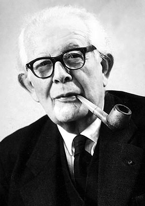

Jean Piaget
Para los niños pequeños, una mentira es más grave cuanto más absurda, aunque engañe menos: decir que un perro es del tamaño de una vaca les parece peor que una mentira creíble, porque provoca antes la reacción del adulto. Los niños mayores invierten el juicio y consideran más grave la mentira que más probablemente engaña, es decir, miran la intención de engañar y no el castigo.
Este paso de juzgar por la reacción de la autoridad a juzgar por la intención es el que usamos para leer la decisión de Santiago
Para Piaget la moral heterónoma se basa en el respeto a la autoridad y su seguimiento de reglas que se ven fijas y los actos que se juzgan por sus consecuencias. La moral autónoma surge de la cooperación entre partes iguales, ya que las reglas son acuerdos e importan las intenciones y su reciprocidad, ya que las reglas son inicialmente exteriores al niño.
En el caso podemos evidenciar que el reglamento se categoriza, ya que el docente presiona con una sanción por su complicidad, por lo que una autoridad impone desde afuera. Mateo actúa por necesidad más no por malicia, y Santiago duda entre la norma, su lealtad y el daño a su amigo.
Sí Santiago denuncia solo por temor a la sanción por obediencia total al reglamento, razona de forma heterónoma. Se considera la intención de mateo, la reciprocidad entre compañeros y la justicia hacia quienes estudiaron, se decide con argumentos propio, se acerca a la autonomía, ambas moralidades están vinculada a un cierto tipo de relación social.
Los límites de Piaget es que no estudio adolescentes, si no únicamente estudio a los niños, en el caso no se muestra el razonamiento real de parte de Santiago. Las etapas son tendencias que pueden convivir entre sí
Lectura en español
Presenta el paso de la heteronomía a la autonomía en Piaget a partir del juego de canicas y de historias como la de las tazas. Explica que el juicio moral depende del desarrollo de la inteligencia, de las relaciones entre iguales y de la independencia frente a la imposición adulta, y discute el papel de la escuela y la familia.
→ Ingresar a la fuenteLectura en inglés
Sostiene que, para Piaget, el juicio moral se construye entre el desarrollo cognitivo y la experiencia social. Revisa realismo moral, responsabilidad, mentira y justicia, y concluye que la autonomía moral surge de relaciones cooperativas; también compara a Piaget con Kohlberg.
→ Ingresar a la fuenteQué tiene de útil: Resume en una tabla la moral heterónoma frente a la autónoma, explica el juego de canicas y las historias con ejemplos, e incluye críticas (muestras pequeñas, edades de desarrollo, variación cultural). Sirve para repasar la teoría antes de leer los artículos, pero es una página divulgativa, no una fuente revisada por pares.
→ Visitar la páginaFuentes consultadas
-
Cruz Puerto, M. S. (2020). Desarrollo moral: Tres comprensiones. Revista Iberoamericana de Psicología, 13(1), 95-103.
-
Enesco, I. y Sierra, P. (2002). El Desarrollo Moral. En P. Herranz y P. Sierra (Eds.), Psicología Evolutiva (Vol. 2, pp. 272-321). UNED.
-
Sánchez Hurtado, Y. (2001). Vygotsky, Piaget y Freud: a propósito de la socialización. Enunciación, (6), 134-140.
-
Zhang, W., Pan, Q. y Guo, B. (2022). The significance of infant research for psychoanalysis. Humanities and Social Sciences Communications, 9, Artículo 194.